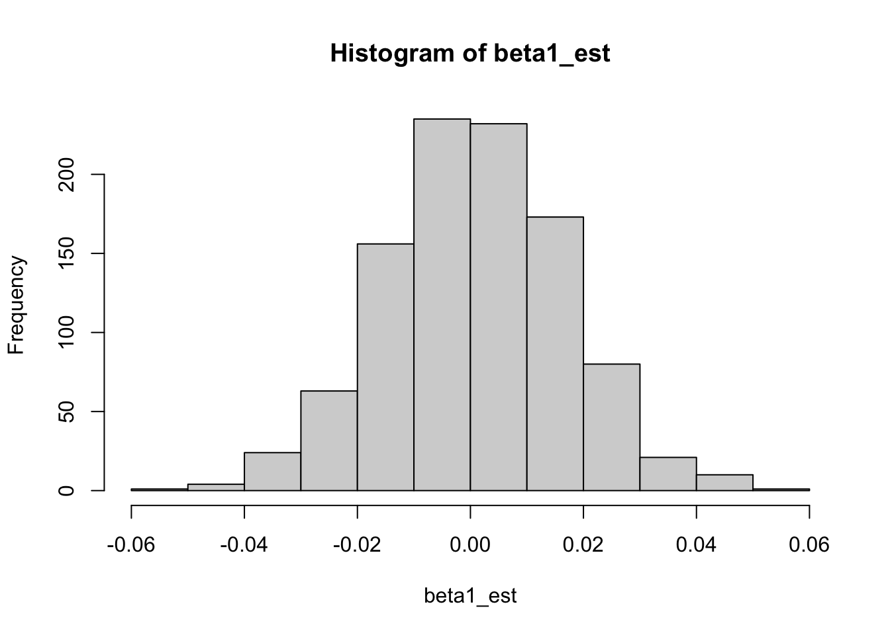
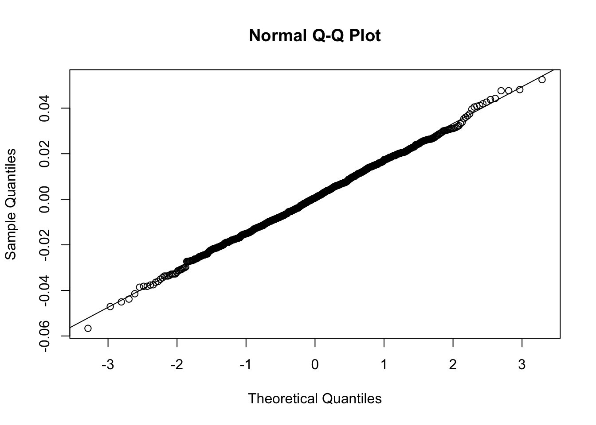

set.seed(561)nsim <-1000n <-500beta1_est <-rep(NA, nsim)se_est <-rep(NA, nsim)pval_naive <-rep(NA, nsim)for(i in1:nsim){ x <-rnorm(n) mu <-exp(4+0*x) y <-rnbinom(n, size=10, mu=mu) m1 <-glm(y ~ x, family = poisson)# estimated slope beta1_est[i] <-summary(m1)$coefficients[2,1]# estimated standard error from the model se_est[i] <-summary(m1)$coefficients[2,2]# p-value pval_naive[i] <-summary(m1)$coefficients[2,4]}mean(pval_naive <0.05)
[1] 0.461
The type I error rate is around 46%. We are definitely not controlling the type I error rate at the desired level.
hist(beta1_est)

mean(beta1_est)
[1] 0.0007650579
The distribution of \(\widehat{\beta}_1\) appears symmetric around 0, and looks like it could be normal. A QQ plot verifies that the normal distribution is a good fit:
qqnorm(beta1_est)qqline(beta1_est)

So, the inflated type I error rate is not being caused by issues with the mean or the use of the normal distribution. Rather, the inflated type I errors are caused by underestimating the variance. The true standard deviation of \(\widehat{\beta}_1\) is around 0.016, but the Poisson regression model thinks that \(SE(\widehat{\beta}_1) \approx 0.006\):
sd(beta1_est)
[1] 0.01594397
mean(se_est)
[1] 0.006061184
library(sandwich)# original variance-covariance matrix from the glm functionvcov(m1)
(Intercept) x
(Intercept) 3.613605e-05 -1.424012e-06
x -1.424012e-06 3.547642e-05
(Intercept) x
(Intercept) 2.330648e-04 2.374527e-05
x 2.374527e-05 2.442295e-04
# z-test statistic from the original glm outputsummary(m1)$coefficients[2,3]
[1] 1.044399
# z-test statistic using the sandwich variancetest_stat_sandwich <- m1$coefficients[2]/sqrt(sandwich_mat[2,2])test_stat_sandwich
x
0.3980498
# p-value from the original glm outputsummary(m1)$coefficients[2,4]
[1] 0.2963007
# p-value using the sandwich variance2*pnorm(abs(test_stat_sandwich), lower.tail=F)
x
0.6905935
The estimated variance from the sandwich estimator is much larger (almost an order of magnitude larger) than the estimated variance under the Poisson distribution assumption. Also, note that
sqrt(2.442295e-04)
[1] 0.01562784
matches the standard deviation of \(\widehat{\beta}_1\) that we observed in simulations! That is, the sandwich variance is correctly estimating the variance of \(\widehat{\beta}_1\).
Because the sandwich variance estimate is larger, the z-statistic is closer to 0 and the p-value is larger.
set.seed(561)nsim <-1000n <-500pval_naive <-rep(NA, nsim)pval_sandwich <-rep(NA, nsim)for(i in1:nsim){ x <-rnorm(n) mu <-exp(4+0*x) y <-rnbinom(n, size=10, mu=mu) m1 <-glm(y ~ x, family = poisson)# p-value (naive) pval_naive[i] <-summary(m1)$coefficients[2,4]# p-value (sandwich) test_stat_sandwich <- m1$coefficients[2]/sqrt(sandwich_mat[2,2]) pval_sandwich[i] <-2*pnorm(abs(test_stat_sandwich), lower.tail=F)}mean(pval_naive <0.05)
[1] 0.461
mean(pval_sandwich <0.05)
[1] 0.053
The type I error rate is much lower than when we used the incorrect variance (from the incorrect Poisson assumption). And the type I error rate is close to the nominal level of 0.05.
# sandwich estimator by handX <-model.matrix(m1)W <-diag(m1$fitted.values)J <-t(X) %*% W %*% XV <-t(X) %*%diag((m1$y - m1$fitted.values)^2) %*% Xsolve(J) %*% V %*%solve(J)
(Intercept) x
(Intercept) 2.330648e-04 2.374526e-05
x 2.374526e-05 2.442294e-04
sandwich(m1)
(Intercept) x
(Intercept) 2.330648e-04 2.374527e-05
x 2.374527e-05 2.442295e-04
The results agree!
nsim <-5000n <-500beta1_est <-rep(NA, nsim)for(i in1:nsim){ x <-rnorm(n, sd=0.5)# true relationship (cubic) lambda <-exp(-1+0.2*x^3) y <-rpois(n, lambda)# fitted model (incorrect shape assumption) m1 <-glm(y ~ x, family = poisson) beta1_est[i] <-summary(m1)$coefficients[2,1]}mean(beta1_est)
[1] 0.1519213
The mean is about 0.15, which is not the same as 0.2. We shouldn’t expect \(\mathbb{E}[\widehat{\beta}_1]\) to match 0.2 here, because \(\widehat{\beta}_1\) is the coefficient when we assume \(\log(\mu_i) = \beta_0 + \beta_1 X_i\), whereas 0.2 is the coefficient when we assume \(\log(\mu_i) = \beta_0 + \beta_1 X_i^3\).